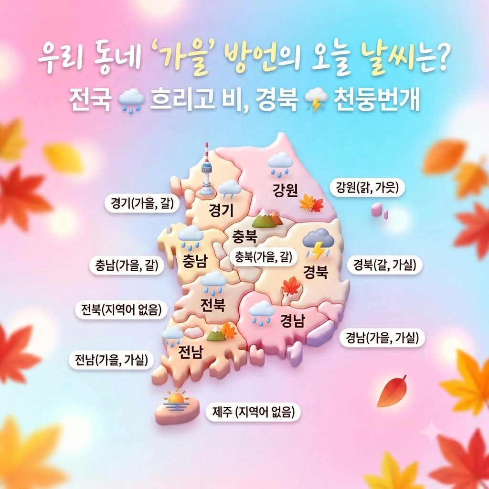
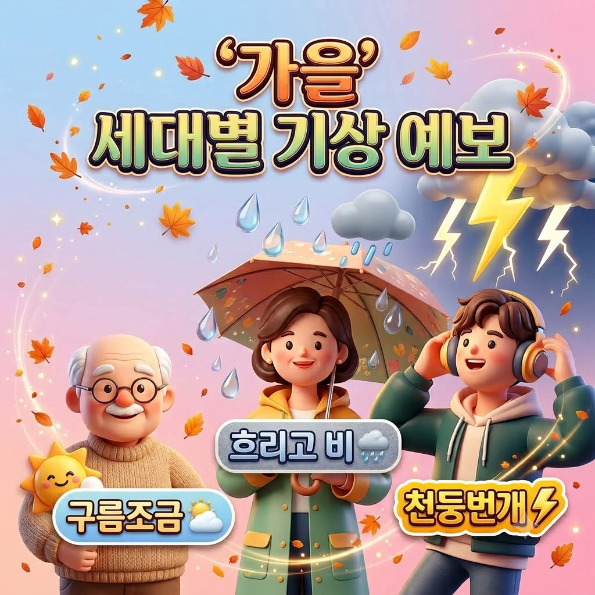
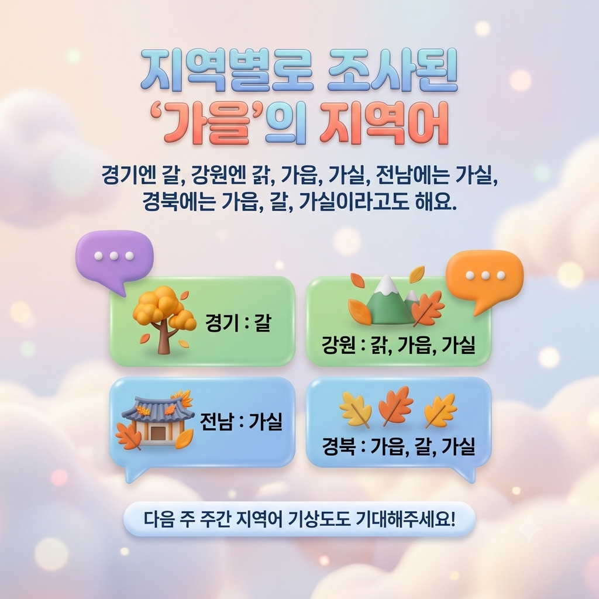

지역어 지도
지역의 말과 삶을 잇는 국가 언어 아카이브
여러 지역의 목소리가 모여,
우리말의 기록이 됩니다
전국 곳곳에서 수집한 방언 어휘와 생생한 음성, 지역별 언어 지도를 지역어 종합 정보 시스템에서 만나보세요.
- 0조사 지점
- 0년축적 기간
- 0만+지역어 자료
삶과 문화가 숨 쉬는 5가지 기록
지역의 말과 목소리를 살펴보고, 직접 기록하고, 연구 자료로 이어지는 지역어 아카이브를 만나보세요.
어휘 조사 자료
구술 발화 자료
나만의 지도 제작
지역어 자료실
오늘의 지역어 & 퀴즈
정겨운 지역의 말과 가볍게 풀어보는 퀴즈를 천천히 넘겨보세요.
생활어 기록 아카이브
자료관 둘러보기
사진으로 보는 생활어
한 장의 사진 속에 남은 물건과 손길, 그리고 지역의 이름을 만나보세요.
생활어 기록을 불러오는 중입니다…


